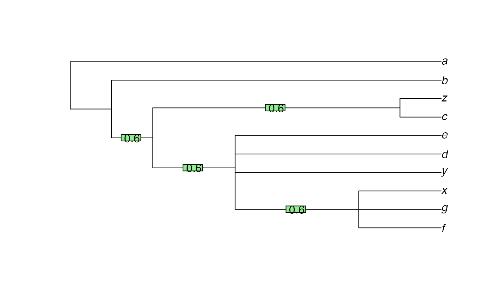
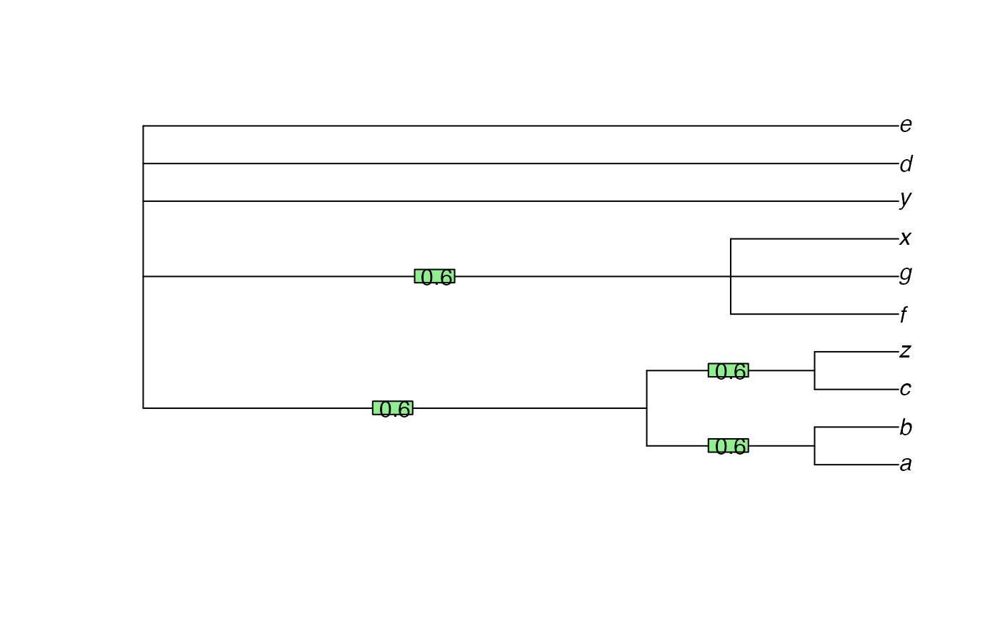
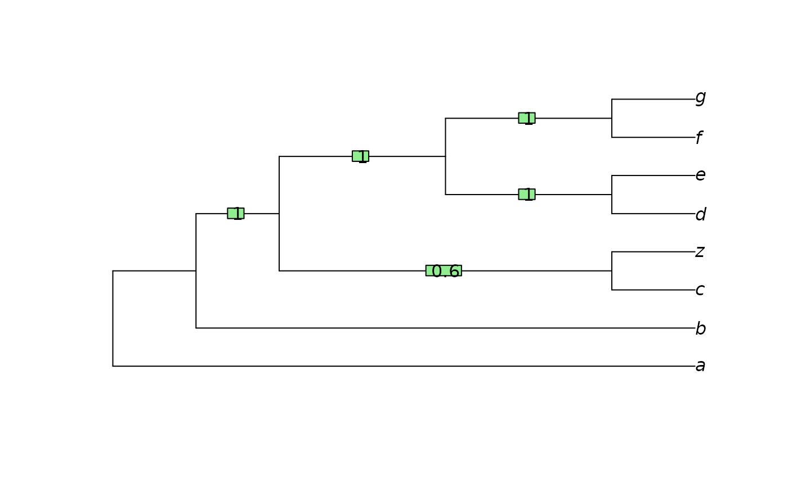

R/RogueTaxa.R, R/SPIC.R, R/zz_RogueNaRok.R
RogueTaxa.RdRogueTaxa() finds wildcard leaves whose removal increases the resolution
or branch support values of a consensus tree, using the relative
bipartition, shared phylogenetic, or mutual clustering concepts of
information.
RogueTaxa(
trees,
info = c("spic", "scic", "fspic", "fscic", "rbic"),
return = c("taxa", "tree"),
bestTree = NULL,
computeSupport = TRUE,
dropsetSize = 1,
neverDrop = character(0),
labelPenalty = 0,
mreOptimization = FALSE,
threshold = 50,
verbose = FALSE
)
QuickRogue(
trees,
info = "phylogenetic",
p = 0.5,
log = TRUE,
average = "median",
deviation = "mad",
neverDrop,
fullSeq = FALSE,
parallel = FALSE
)
C_RogueNaRok(
bootTrees = "",
runId = "tmp",
treeFile = "",
computeSupport = TRUE,
dropsetSize = 1,
excludeFile = "",
workDir = "",
labelPenalty = 0,
mreOptimization = FALSE,
threshold = 50
)List of trees to analyse.
Concept of information to employ; see details.
If taxa, returns the leaves identified as rogues; if tree,
return a consensus tree omitting rogue taxa.
Logical: If FALSE, then instead of trying to maximize
the support in the consensus tree, RogueNaRok will try to maximize the number
of bipartitions in the final tree by pruning taxa.
Integer specifying maximum size of dropset per iteration.
If dropsetSize == n, then RogueNaRok will test in each iteration which
tuple of n taxa increases the optimality criterion the most, pruning
taxa accordingly.
This improves the result, but run times will increase at least linearly.
Tip labels that should not be dropped from the consensus.
A weight factor to penalize for dropset size when
info = "rbic".
The higher the value, the more conservative the algorithm is in pruning taxa.
The default value of 0 gives the RBIC; 1 gives Pattengale's
criterion.
A threshold or mode for the consensus tree
that is optimized. Specify a value between 50 (majority rule consensus,
the default) and 100 (strict consensus), or set mreOptimization = TRUE
for the extended majority rule consensus.
Note that rogue taxa identified with respect to different thresholds can
vary substantially.
Logical specifying whether to display output from RogueNaRok.
If FALSE, output will be included as an attribute of the return value.
Proportion of trees that must contain a split before it is included in the consensus under consideration. 0.5, the default, corresponds to a majority rule tree; 1.0 will maximize the information content of the strict consensus.
Logical specifying whether to log-transform distances when calculating leaf stability.
Character specifying whether to use "mean" or "median"
tip distances to calculate leaf stability.
Character specifying whether to use "sd" or "mad" to
calculate leaf stability.
Logical specifying whether to list all taxa (TRUE), or
only those that improve information content when all are dropped (FALSE).
Logical specifying whether parallel execution should take place in C++.
Path to a file containing a collection of bootstrap trees.
An identifier for this run, appended to output files.
If a single best-known tree (such as an ML or MP tree)
is provided, RogueNaRok optimizes the bootstrap support in this
best-known tree (still drawn from the bootstrap trees);
the threshold parameter is ignored.
Taxa in this file (one taxon per line) will not be considered for pruning.
Path to a working directory where output files are created.
RogueTaxa() returns a data.frame. Each row after the first,
which describes the starting tree, describes a dropset operation.
Columns describe:
num: Sequential index of the drop operation
taxNum: Numeric identifier of the dropped leaves
taxon: Text identifier of dropped leaves
rawImprovement: Improvement in score obtained by this operation
IC: Information content of tree after dropping all leaves so far,
by the measure indicated by info.
QuickRogue() returns a data.frame in the same format as
RogueTaxa().
C_RogueNaRok() returns 0 if successful; -1 on error.
"Rogue" or (loosely) "wildcard" taxa (Nixon and Wheeler 1992) are leaves whose position in a tree is poorly constrained, typically because much of the phylogenetic data associated with the taxon is either missing or in conflict with other data (Kearney 2002) .
These functions use heuristic methods to identify rogue taxa whose removal improves the information content of a consensus tree, by the definitions of information discussed below.
QuickRogue(): Shortcut to "fast" heuristic, with option to return
evaluation of all taxa using fullSeq = TRUE.
The splitwise phylogenetic information content measure produces the best results (Smith 2022) . It uses the splitwise information content as a shortcut, which involves double counting of some information (which may or may not be desirable). The same holds for the mutual clustering information measure; this measure is less obviously suited to the detection of rogues. This measure interprets split frequency as a proxy for the probability that a split is true, which is a valid interpretation of a Bayesian posterior sample (Holder et al. 2008) , a reasonable but imperfect interpretation of a bootstrap sample (Berry and Gascuel 1996) , and a bad interpretation of a sample of most parsimonious trees.
The "relative bipartition information criterion" (RBIC) is the sum of all support values divided by the maximum possible support in a fully bifurcating tree with the initial set of taxa. The relative bipartition information content approach employs the 'RogueNaRok' implementation (Aberer et al. 2013) , which can handle large trees relatively quickly. The RBIC is is not strictly a measure of information and can produce undesirable results (Wilkinson and Crotti 2017) .
C_RogueNaRok() directly interfaces the 'RogueNaRok' C implementation,
with no input checking; be aware that invalid input will cause undefined
behaviour and is likely to crash R.
Aberer AJ, Krompass D, Stamatakis A (2013).
“Pruning rogue taxa improves phylogenetic accuracy: an efficient algorithm and webservice.”
Systematic Biology, 62(1), 162–166.
doi:10.1093/sysbio/sys078
.
Berry V, Gascuel O (1996).
“On the interpretation of bootstrap trees: appropriate threshold of clade selection and induced gain.”
Molecular Biology and Evolution, 13(7), 999–1011.
doi:10.1093/molbev/13.7.999
.
Holder MT, Sukumaran J, Lewis PO (2008).
“A justification for reporting the majority-rule consensus tree in Bayesian phylogenetics.”
Systematic Biology, 57(5), 814–821.
doi:10.1080/10635150802422308
.
Kearney M (2002).
“Fragmentary taxa, missing data, and ambiguity: mistaken assumptions and conclusions.”
Systematic Biology, 51(2), 369–381.
doi:10.1080/10635150252899824
.
Nixon KC, Wheeler QD (1992).
“Extinction and the origin of species.”
In Novacek MJ, Wheeler QD (eds.), Extinction and phylogeny, chapter Extinction and the origin of species, 119-143.
Columbia University Press, New York.
Smith MR (2022).
“Using information theory to detect rogue taxa and improve consensus trees.”
Systematic Biology, 71(5), 986–1008.
doi:10.1093/sysbio/syab099
.
Wilkinson M, Crotti M (2017).
“Comments on detecting rogue taxa using RogueNaRok.”
Systematics and Biodiversity, 15(4), 291–295.
doi:10.1080/14772000.2016.1252440
.
library("TreeTools", warn.conflicts = FALSE)
#> Loading required package: ape
trees <- list(read.tree(text = ("(a, (b, (c, (d, (e, (X1, X2))))));")),
read.tree(text = ("((a, (X1, X2)), (b, (c, (d, e))));")))
RogueTaxa(trees, dropsetSize = 2)
#> ✔ 2026-02-02 11:30:26.560348: Dropped 2 leaves, rendering 4.64386 bits.
#> num taxNum taxon rawImprovement IC
#> 1 0 <NA> <NA> NA 3.169925
#> 2 1 6,7 X1,X2 1.473931 4.643856
trees <- list(
read.tree(text = "((a, y), (b, (c, (z, ((d, e), (f, (g, x)))))));"),
read.tree(text = "(a, (b, (c, (z, (((d, y), e), (f, (g, x)))))));"),
read.tree(text = "(a, (b, ((c, z), ((d, (e, y)), ((f, x), g)))));"),
read.tree(text = "(a, (b, ((c, z), ((d, (e, x)), (f, (g, y))))));"),
read.tree(text = "(a, ((b, x), ((c, z), ((d, e), (f, (g, y))))));")
)
cons <- consensus(trees, p = 0.5)
plot(cons)
LabelSplits(cons, SplitFrequency(cons, trees) / length(trees))

reduced <- RogueTaxa(trees, info = "phylogenetic", ret = "tree")

#> ✔ 2026-02-02 11:30:26.668716: Dropped 2 leaves, rendering 17.0678 bits.
plot(reduced)
LabelSplits(reduced, SplitFrequency(reduced, trees) / length(trees))

QuickRogue(trees, fullSeq = TRUE)
#> num taxNum taxon rawImprovement IC
#> 1 0 <NA> <NA> NA 8.806435
#> 2 1 2 y 3.818116 12.624552
#> 3 2 10 x 4.443274 17.067826
#> 4 3 1 a -17.067826 0.000000
#> 5 4 3 b 0.000000 0.000000
#> 6 5 4 c 0.000000 0.000000
#> 7 6 5 z 0.000000 0.000000
#> 8 7 6 d 0.000000 0.000000
#> 9 8 7 e 0.000000 0.000000
#> 10 9 8 f 0.000000 0.000000
#> 11 10 9 g 0.000000 0.000000
bootTrees <- system.file("example/150.bs", package = "Rogue")
tmpDir <- tempdir()
XX <- capture.output( # Don't print verbose run details to console
C_RogueNaRok(bootTrees, workDir = tmpDir)
)
# Results have been written to our temporary directory
oldwd <- setwd(tmpDir)
head(read.table("RogueNaRok_droppedRogues.tmp", header = TRUE))
#> num taxNum taxon rawImprovement RBIC
#> 1 0 NA <NA> 0.000 0.570381
#> 2 1 9 Species172 1.238 0.578803
#> 3 2 89 Species099 0.801 0.584252
#> 4 3 16 Species028 0.712 0.589095
#> 5 4 43 Species077 0.592 0.593122
#> 6 5 148 Species137 0.539 0.596789
# Delete temporary files
file.remove("RogueNaRok_droppedRogues.tmp")
#> [1] TRUE
file.remove("RogueNaRok_info.tmp")
#> [1] TRUE
setwd(oldwd)